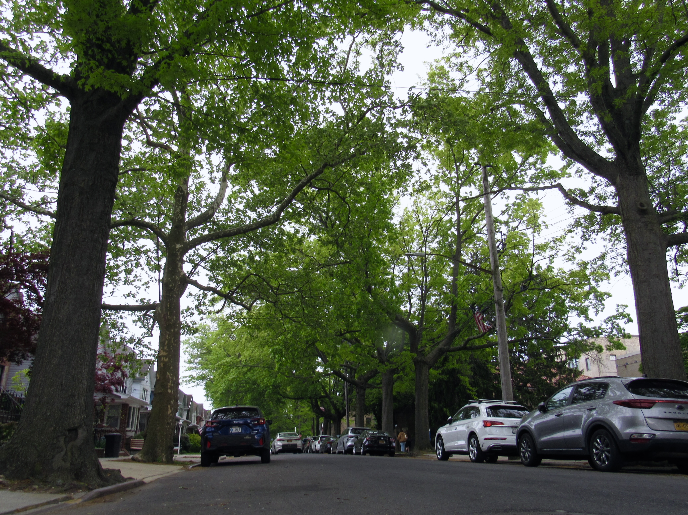
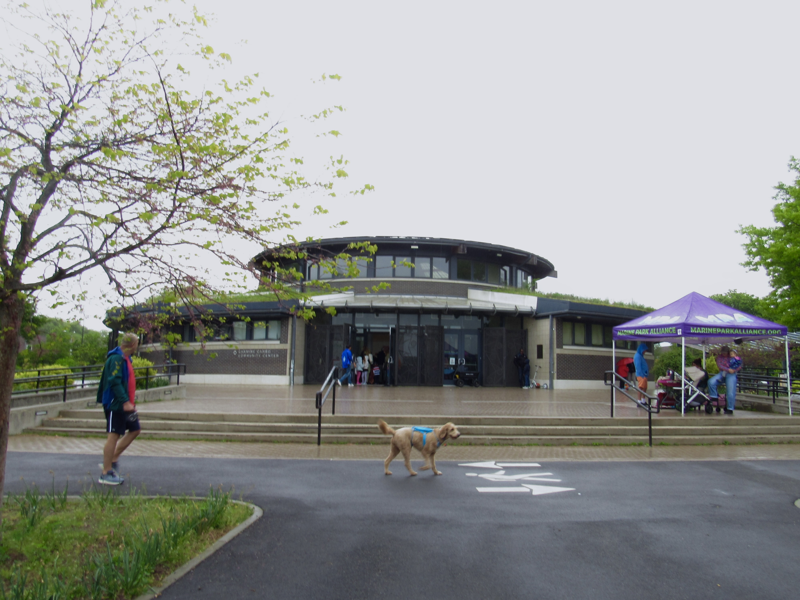

Connie Donohue says trees are taking over her block. She’s spent four decades in the same home, located in a quiet south Brooklyn neighborhood called Marine Park. For about as long, she recalls roots unearthing sidewalk tiles and creeping into sewers; branches sprawling downward and blocking street signs.
“It’s a problem. A lot of the trees are overgrown,” Donohue said. “There’s a general very bad feeling about the tree maintenance in the neighborhood.”
Tree upkeep is a chronic concern in Marine Park, a new data investigation reveals. But many residents worry their calls for assistance have gone unheard by the New York City Department of Parks & Recreation, which is charged with maintaining trees on public land.
The Marine Park zip code ranks first in calls to the city’s 311 service line over tree issues. The zip code also ranks third in calls per tree, so it’s not just that having more trees in Marine Park triggers more complaints, either.
A spokesperson for the parks department denied that Marine Park has more overgrowth than other neighborhoods. But in an email statement, they said the area has a “mature tree population” that may spur more 311 calls.
As trees grow, their root systems and branches get bigger, which warrants regular maintenance. At first blush, tree overgrowth might seem like a minor issue. But trees can block streets, or more easily fall onto property or powerlines. Dead branches are also prone to falling unexpectedly, which can be dangerous for drivers and pedestrians.
To make matters worse, New York City is currently behind on a process called tree pruning, where it removes dead and damaged branches. The parks department pruned 44% fewer trees late last summer than it did the year prior, per a report released by the office of Mayor Zohran Mamdani this past March.
At the end of summer 2025, the parks department did not have a contractor to oversee pruning in Brooklyn or Queens due to bidding issues, according to the mayor's report.
Concerns around the aging tree population in Marine Park have not gone unnoticed. Last year, a storm ripped through the neighborhood, knocking down trees and even damaging homes.
However, the extent of resident concerns, and how it compares to other neighborhoods in New York City, has gone unreported until this investigation. The city’s 311 call records reveal that, in Marine Park and surrounding areas, tree maintenance has been an outsized and years-long issue.
“We receive complaints daily about overgrown trees with hanging branches,” said Theresa Scavo, chair of Brooklyn Community Board 15, which borders Marine Park, in an email statement. “Most homeowners are fearful of a limb falling and someone being injured on their property.”

The parks department schedules tree pruning for different neighborhoods “on a rotating basis,” the parks spokesperson said. The department has scheduled more than 2,000 tree prunings for the Marine Park area to be completed by June 2026, according to its website, but the status of each tree pruning is still labeled as incomplete.
Residents of Marine Park who were interviewed for this story cast doubt that the parks department keeps up with its own pruning timeline, and said when maintenance staff visit trees they do not prune them enough.
Residents can also alert the department about tree maintenance needs using the city’s 311 service line, but several residents said the parks department does not respond directly to complaints, making them feel like their concerns are going unheard.
“There’s so many dead branches on the trees,” said Marine Park resident Pauline Siringo. “I don’t know who’s looking at them, to be quite honest, when I call.”
The parks spokesperson did not directly respond to follow-up questions about the department’s protocol for following up on 311 complaints, or determining whether a tree needs more pruning.
In New York City, trees have become a source of surprising controversy. Residents often want more greenery to improve the quality of life in the city. In cities, trees reduce air pollution, cool down streets, manage storm runoff and even improve water quality, according to the U.S. Environmental Protection Agency.
But concerns over the parks department’s ability to keep up with a growing urban canopy have pushed some long-time residents to view new planting less favorably. Despite their frustrations, Marine Park residents interviewed for this story widely agree they do not want the trees in their neighborhood chopped down.
The issue, Marine Park residents say, is that city officials are not keeping up with the mature trees that give the neighborhood its charming suburban character. Under city law, locals can’t prune trees without city permission, either.
“If you grew up in a suburban area, you prune your tree the right way. Get rid of the dead branches,” said Thomas FitzPatrick, a former sanitation worker who grew up nearby in Rockaway. If you prune trees independently in New York City, “parks is going to come down and throw a fine on you.”
In recent years, the parks department has planted tens of thousands of new trees to widen these benefits to more parts of the city. Mamdani aims to extend tree coverage to 30% of the city by 2040. Some residents are concerned the parks department will not be able to keep up.

Community advocacy groups, like the Marine Park Young Adults Association, are working to maintain local trees within the confines of what is legal, like cleaning up tree beds and clearing walkways, said Sam Daniele, the nonprofit’s president.
That provides some help, but demand for better maintenance from the city itself remains.
“When you call 311 for issues with trees, I don't want to say they don't take it seriously,” Daniele said. “But they tend to focus on other issues first.”
For many residents, the lush greenery and quiet character of Marine Park drew them to the neighborhood in the first place. But persistent concerns around the neighborhood’s aging tree population has made a one-time sanctuary feel stressful, even scary.
“It’s good for the environment. For the oxygen. It’s good for a lot of things,” Donohue said of the neighborhood’s tree coverage. “It’s not so much that we mind the trees.”
What is scary is the risk poorly maintained trees may pose to the community, she said. “You have to wait for it to actually fall down from a storm before somebody will come and say, ‘Oh yeah, we’re going to cut it down.’”